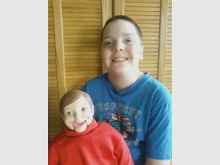

A friend in need...
7/1/2012
I rarely ask for donations, but from time to time a situation arises when I feel it is appropriate to consider a person or project worthy of such. With that in mind, meet young Stephen Matthews, son of Bill Matthews. You may recognize Bill's name since has contributed to this blog on several past occasians.
When I suggested to Bill that he consider a purchase of a set of the Hall of Fame coins, I received this reply:
"Thank you so much, Clinton! I really appreciate it. I do plan on purchasing all the coins eventually. However, being a missionary on deputation (the web site for our ministry is www.roapm.com.), funds are quite tight. I'm hoping/praying to get caught up soon so we have some "spare" cash. One of the things I really want to get is a better figure for Stephen (my 10-yr-old). He's practicing with his modified Willie Talk, but I'd like to be able to get a nicer, more professional figure and surprise him with it when he graduates from the Maher Course."
When I suggested to Bill that he consider a purchase of a set of the Hall of Fame coins, I received this reply:
 |
| Stephen Matthews with "Buddy" |
{kind=link}
I love it when young people take up the art of ventriloquism, especially when their interest continues to the point where it becomes obvious it is more than a passing fad. And when both Father and son are vents, that's even better! As I read Bill's note, I thought, "I wonder if there is someone who follows my blog who might have a vent figure (hard puppet) no longer being used, and would consider donating it to Stephen so he can 'graduate' to a more professional figure?" I know it's a 'long shot', but it never hurts to ask!
* * * *
Update for Mr. D: I'm very moved by the number of readers who responded to this post! You are the best! A figure has been chosen for Stephen - full story to follow.
* * * *
Update for Mr. D: I'm very moved by the number of readers who responded to this post! You are the best! A figure has been chosen for Stephen - full story to follow.